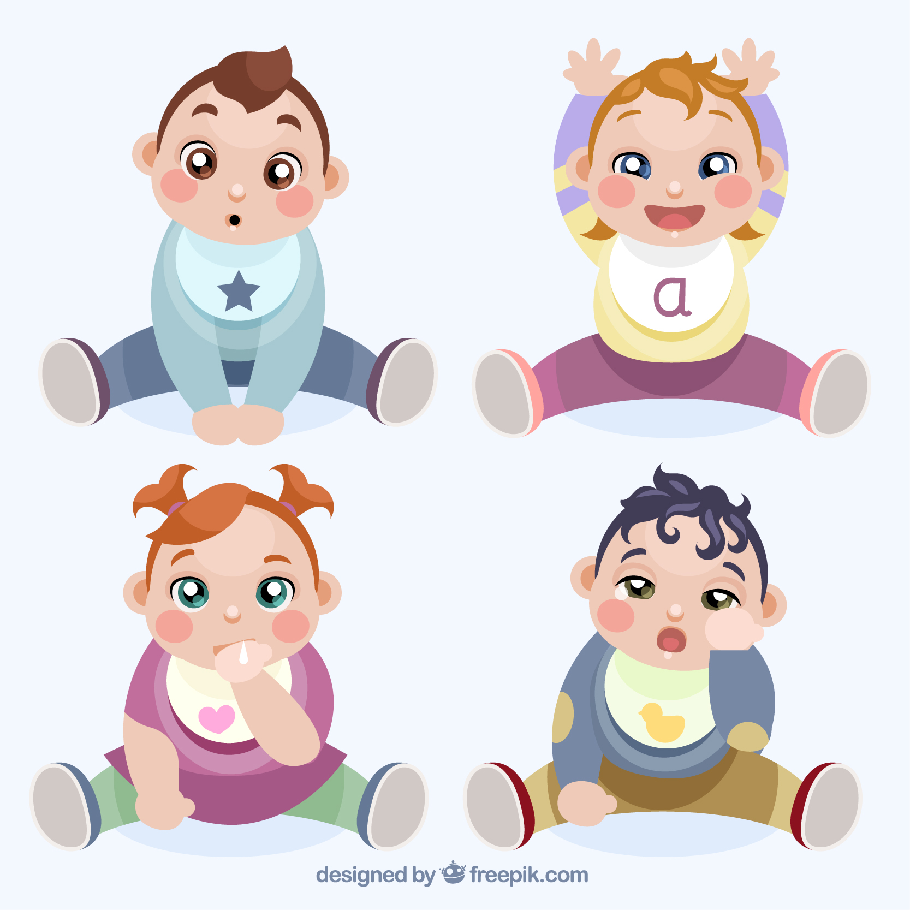

Juegos para los 1 a 2 años

- Canto: ya comenzó a pronunciar sus primeras palabras y quiero hablar de todo. Elige una canción infantil sencilla e intenten cantarla juntos. Estimularás su lenguaje y memoria.
- Obstáculos: si tu hijo ya camina, estará feliz de esquivar objetos. Prepara una carrera de obstáculos con objetos blandos, como cojines. Estarás potenciando su coordinación y equilibrio.
- Escondida: este clásico juego estimula la memoria, el concepto de permanencia y la resolución de problemas. Selecciona objetos de diferentes texturas y formas y que él ya conozca. La idea es esconderlos debajo de las sábanas y que por medio del tacto, el niño descubra de qué objeto se trata.
Fuente: https://www.vitamina.cl/juegos-hijo-0-2-anos